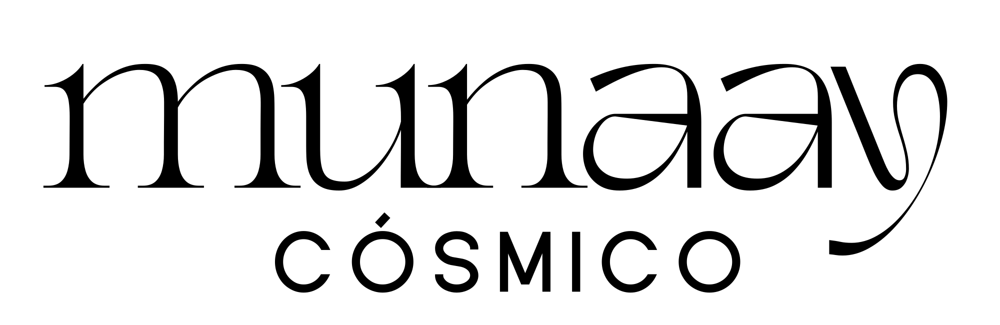
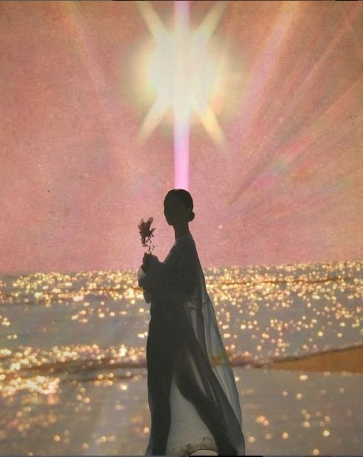

Sesión Regular
$666
Ideal para explorar un tema específico que quieres revisar: una relación, una decisión, un ciclo que estás viviendo, una emoción que no puedes nombrar. Llegamos con intención y el oráculo hace el resto.
Agendar · $666
AgendarCanalización de oráculo
El oráculo no predice el futuro. Lee lo que ya está en movimiento en tu campo energético y te entrega exactamente lo que tu alma necesita escuchar en este momento.

Elige el mensaje que tu momento necesita.
$666
Ideal para explorar un tema específico que quieres revisar: una relación, una decisión, un ciclo que estás viviendo, una emoción que no puedes nombrar. Llegamos con intención y el oráculo hace el resto.
Agendar · $666$888
La energía que se activa a partir de tu nuevo ciclo de vida. Tu retorno solar marca el inicio de un año nuevo personal y el campo tiene mensajes específicos sobre lo que ese ciclo trae para ti. Ideal para agendarla cerca de tu cumpleaños.
Agendar · $888$888
La energía general del año y los mensajes clave para tu alma en este período. Una lectura de panorama: qué temas, aprendizajes y oportunidades están activos para ti durante los próximos doce meses.
Agendar · $888Selecciona la sesión que resuena con tu momento actual y elige tu fecha y hora a través del link de agendamiento.
Llega como eres. Sin preparación especial. El oráculo accede al campo energético directamente. No necesitas llegar con preguntas preparadas, aunque puedes hacerlo.
En las 48 horas posteriores a la sesión recibes tu PDF con los mensajes más importantes de tu lectura para que puedas regresar a él cuando lo necesites.
No necesitas creer para recibir. Solo llega con curiosidad honesta. La mayoría de personas que trabajan conmigo llegaron escépticas y salieron con algo que no esperaban: claridad real.
No hay preparación especial requerida. Si quieres, llega con una situación o pregunta en mente, pero no es obligatorio. El campo hace el resto.
Sí. Te lo recomiendo. Algunos mensajes se entienden profundamente días o semanas después.
Todas las sesiones son online por videollamada. Puedes estar donde estés.
El campo siempre tiene algo que decirte. La pregunta es si estás lista para escucharlo.